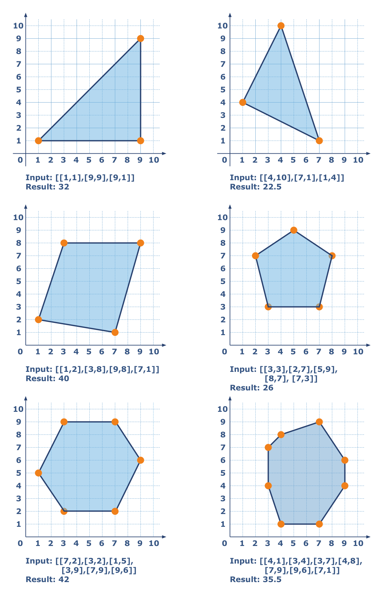

There is a convex polygon on a coordinate plane. This polygon is presented as a list of vertices coordinates. Each vertex is connected sequentially with the last connecting back to the first. A polygon has N vertices. You should write a program that will calculate the area of a polygon. The result should be given with one digits precision as ±0.1.
Input: Coordinates as a list of lists. Each list contains two integers.
Output: The area of the polygon as a float.
Example:
checkio([[1, 1], [9, 9], [9, 1]]) == 32
checkio([[1, 2], [3, 8], [9, 8], [7, 1]]) == 40
checkio([[3, 3], [2, 7], [5, 9], [8, 7], [7, 3]]) == 26
Precondition:
3 ≤ N ≤ 8∀ x, y ∈ coordinates : 0 ≤ x ≤ 10; 0 ≤ y ≤ 10
Solution:
def distance(A, B):
return ((A[0]-B[0])**2+(A[1]-B[1])**2)**0.5
def calTriArea((A, B, C)):
a, b, c = distance(A, B), distance(B, C), distance(A, C)
s = (a + b + c)/2
return (s*(s-a)*(s-b)*(s-c))**0.5
def checkio(data):
triangles = []
while len(data)>3:
triangles.append(data[:3])
data.remove(data[1])
triangles.append(data)
return sum(calTriArea(t) for t in triangles)